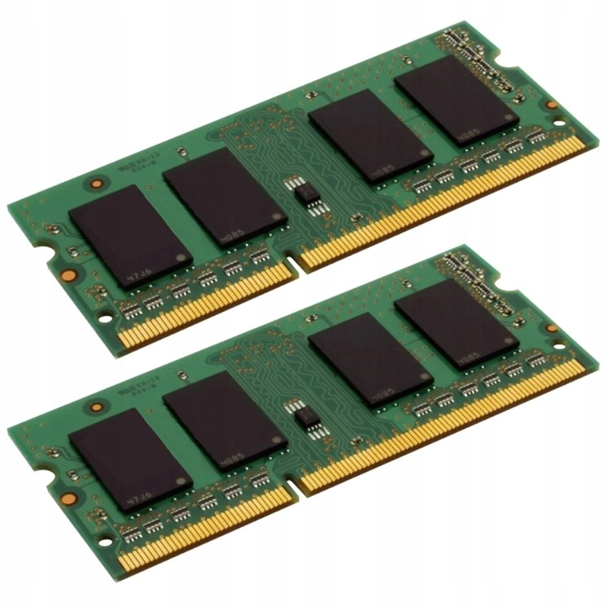
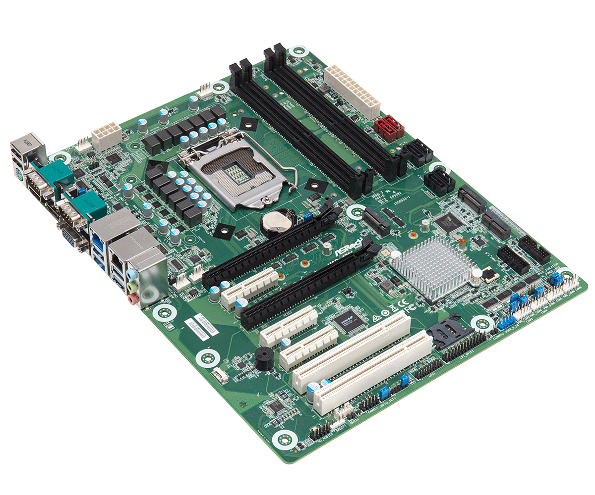

Procesor (CPU) – jest to serce komputera, które odpowiedzialne jest za wykonywanie obliczeń i instrukcji przetwarzania danych. Procesor ma określone taktowanie, liczbę rdzeni i cache, które determinują jego wydajność i szybkość działania.
Pamięć RAM (Random Access Memory) – jest to pamięć komputera, w której przechowywane są dane i aplikacje wykorzystywane w trakcie działania komputera. Pamięć RAM ma określoną pojemność, prędkość i typ, które determinują jej wydajność i szybkość działania.

Napęd SSD, dysk SSD, napęd półprzewodnikowy urządzenie pamięci masowej zbudowane w oparciu o pamięć flash.
Dysk twardy (HDD) – jest to pamięć komputera, w której przechowywane są dane i aplikacje, które nie są wykorzystywane w trakcie działania komputera. Dysk twardy ma określoną pojemność, prędkość obrotową i interfejs, które determinują jego wydajność i szybkość działania.
Płyta główna (Motherboard) – jest to podstawowy element komputera, który łączy ze sobą wszystkie podzespoły wewnętrzne i zapewnia im dostęp do siebie i zasilania. Płyta główna posiada różne złącza i porty, takie jak USB, HDMI, Ethernet, PCIe itp., które pozwalają na podłączenie podzespołów zewnętrznych i peryferyjnych.

Karta graficzna (GPU) – jest to podzespoł komputera, który odpowiedzialny jest za wyświetlanie obrazu na monitorze. Karta graficzna posiada określoną ilość pamięci, zegar taktowania i interfejs, które determinują jej wydajność i szybkość działania.
Zasilacz (PSU) – jest to urządzenie, które odpowiedzialne jest za dostarczanie energii elektrycznej do podzespołów komputera. Zasilacz posiada określoną moc, napięcie i typ, które determinują jego wydajność i niezawodność. Zasilacz jest niezbędny do zasilania i działania wszystkich podzespołów komputera.